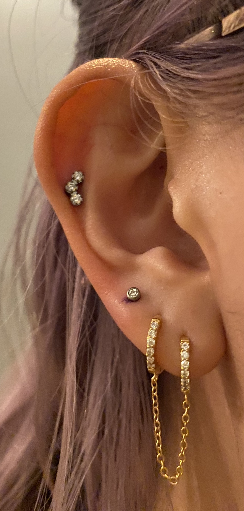
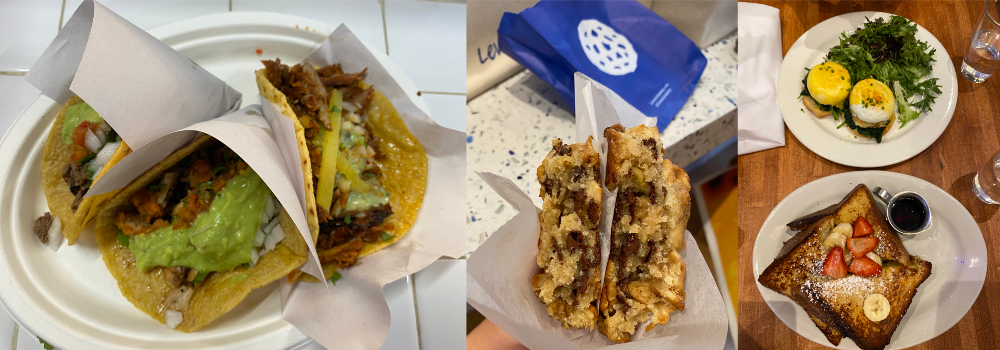

Daily Log
Just a informal log of day to day feelings.
Aug
Aug 28
started playing league but school is almost starting, so maybe that was a bad decision??? i like reading the story behind each character. more fun than memorizing ochem @_@.
Aug 24
feeling a big writer’s block these past monthes. i kind of want to get back to school since there’s deadlines to keep me on track. during the summer it’s way to easy to just take a bunch of naps and watch netflix all day.
Aug 16
finally watched plai lecture 2.
Aug 15
i am back in canada. nyc has been quite the adventure and i met some awesome people, unfortunatly they are all in the usa so that sucks. i’ve solidified my plans to go to grad school, now comes the taunting journey of grad apps :/
I think my dream as a kid was to do research in chemistry. I didn’t understand the steps needed to pursue that dream, but I vividly remember telling my math teacher I wanted to do research in chemistry and he told me that I should go to UC Berkeley.
Then in high school that’s what I went with: I was going to major in Chemistry at UC Berkeley. I don’t know what happened along the way, what fucked up my thinking but computer science became very popular. I was weirdly rebellious and would not dare touch biology since there was "so many girls in biology", so I took physics and chemistry. As a result I was surrounded by lots of boys (in physics) and many of them had aspirations as engineers and later on as software developers. Maybe if I was in biology I’d be more influenced to do a degree in the pure sciences.
Anyways now I’m going into my 4th year at UBC. I’m trying to change my program to a combined major in computer science and chemistry. Most of my courses are going to chemistry based next year which I’m excited for. But now comes the question of whether I should do a PhD in chemistry or computer science. There’s also the question of whether I should even do a PhD. Anyways, the reasons for studying chemistry and computer science are pretty opposite for me.
If I never did a degree in computer science everything would be much more straight forward. Now I have a pro and cons list laid out in front me of: PhD in CS or PhD in Chemistry? Can I even get into a PhD program for CS? For chemistry? I’m not even that extraordinary.
I’m also finding it really hard to do stuff, so today I’m going to try and review a chemistry lecture. One step a day is better than zero steps a day.
Aug 8
i got sick aug 5 and have been isolating and sleeping for the weekend. tbh i’ve been going out so much that me getting sick was a highly likely event, but i was hoping that it wouldn’t be the case.
working in industry sucks.
Aug 2
chinatown got all the affordable foods.
July
July 26
played board/card games with the interns yesterday and went to the office today. took back lots of free food :p
July 23
there’s only a few days left, 21 days until i return. honestly, i’ve had enough of nyc for a long time.
July 17
July 16
went to japan fest. the fresh onigiri slapped.
July 15
helix piercing still kinda raw. kind of giving no fucks about work.
July 14
got my ears pierced and thinking about writing about the thought process of getting my ears pierced. nothing else much except talking and thinking about going to grad school. the pain kinda shook me though.

July 13
went to try xian famous foods but it was too spicy and the burger was too fatty and not salty enough. also drank a rose but that also tasted ish and i tried a gin and tonic and it was much better. also saw a super moon or something and it was pretty bright.
i kind of rage quit at work but lowkey did. i just think industry pisses me off too much and im not passionate enough about my work to let annoyances slide.
July 7 - 12
some time in this range of days i hit a 205 deadlift (it was sumo tho, so kind of sus???? is sumo legit??) i’ve never hit more than 200 on conventional and the last time i tried i pulled my hamstring and couldn’t do any deadlifts or squats for a few monthes. going to the gym also reminds me of the days in high school when i was training for a body building comp. i think it’s a thing i’d still wanna do in the future.
tbh im scared of drinking since i dont know what id do while drunk. i think there is a possibility that i could abuse alcohol, given my history of an eating disorder and addiction to exercise. its hard to tell people thats why i dont drink alcohol because thats essentially me pouring out my entire story.

in one event i was surrounded by people and felt super alone. i was doing some chemistry and overthinking/daydreaming and suddenly realized how alone i was. my comfort person was half a country away and i sometimes don’t know what thoughts are appropriate to share with other people. with bf i could juts about share anything. but now i have to really filter my thoughts and think about if i should even be sharing these thoughts in the first place, maybe they would be better just kept in my head.
i also feel like i really headed into a CS degree blind as fuck. most of my friends in high school were similar to me, all interested in something in the pure sciences, whether it be chemistry, physics or biology. most headed to premed. most are now in med school. and it’s gotten me thinking "do i wanna even be in the tech industry". there’s so much i’ve learned having interned in the tech industry. sometimes i wish i never learned any of the shit involved in the tech industry.
July 4 - 6
oh god these past few days have really drained my social and physical batteries. i went with two other interns to see the fireworks for july 4th (honestly fuck july 4th, but i went because its an eXpeRiEncE) and everyone else seemed want to see the fireworks too since all the fucking parks were so crowsed and it smelled like weed the entire time. it got really crowded, and it truly seems like everyone just fucking forgot about covid. but that wasn’t the worst part of the night. not only were the fireworks kinda shit, but getting back to the apartment was fucking terrible. everyone’s trying to go to the metro and people are so fucking inconsiderate of other people, they will push and shove you to get into the subway. people also packed themselves like sardines (many didnt wear masks) into the subway. that was truly fucking god awful. these past few days have given me confirmation that i do not want to ever live in nyc. i was also constantly thinking about the shootings that were occuring in other states. there’s nothing special about me or nyc that makes nyc any less likly to have a shooting. i kept thinking, "if this is my last day, would i be ok?". it’s really not fair that americans have to ask themselves that every day they wake up. along with the news about roe vs wade being overturned, i do not want to contribute any more money or support to the usa after this internship ends.
this internship offered the answer to two questions i have: do i want to live in the usa and do i want ot work in industry? the answer to both questions is no. of course, nyc doesn’t represent all of or even many parts of the usa. but the shit storm of politics and joke of the democractic party gives me no hope for the usa.
and while nyc is walkable, its fucking terrible to walk around in. trucks are parked all over the sidewalk, people don’t respect the stop/walk signs and go as they please, cars park in the bus stop signs and it just seems like no one respects others. it’s also loud as fuck because there’s fucking trucks everywhere and you have to practically shout to the people walking beside you.
and the metro is terrible. the trains screech so much i think i’ll be deaf from the screeching soon. the platforms are like half a metre wide in some stations and thats just fucking great because you have to keep watching to make sure no one fucking pushes you off.
also there’s so many small inconveniences that pushed me over the edge. my work project is boring, im bored, none of the dryers were free and i had to wait 2 hours for someone to take their fucking clothes out of the dryer.
June 30 - July 3
well i haven’t been tracking what’s occured in the past few days, but i will list it out now. so everyone knows a bad manager can ruin everything. i think thats what happened at microsoft, and it’s clouded my feelings about the tech industry. i chose to work at capital one because it’s also in finance, so i wanted to see the differences between a tech company like microsoft and a company like capital one. i’ll just list the reasons out in no particular order.
-
use of third party software: capital one has libraries hosted on their own platform and indepedently reviews each aws service. you also have to install and access third party software through a VPN and proxy. many of my debugging issue have been due to the proxy. it’s definitely interesting to see how many more levels there are to using third party software here than at microsoft.
-
java everywhere: it’s true, banks are slow on the tech. though i was surprised to see that some interns were using go. but the languages being used are pretty standard: java, python, go, js, swift
-
less "company spirit"?: in a good way. people are more treating this as a job, rather than their life’s dream like what many interns at microsoft would. i kind of find this refreshing, in comparision to the garage program where we had culture constantly screamed about at us
-
better work lift balance than microsoft: microsoft likes to talk about their work life balance but at capital one this is where i’ve seen the most chill interns. microsoft work life balance isn’t bad, but capital one’s is even more.
well that was work updates, time for personal updates
-
going to the gym opened up a whole can of worms of body dismorphia. in the past few monthes i’ve avoided looking in the mirror and been mostly wearing sweats. but going to the gym has caused alot of the "old days" to resurface, to when i was more fit, physically and mentally in regards to strength training. weightlifting is something that helps me with mental health though, and as i’m regaining my strength i feel better about myself
-
i also ate american brunch for the first time, authentic tacos (which i didn’t like) and levain cookies!
-
also dyed my hair!
-
also trader joe’s is awesome

June
June 29
i don’t like tacos idk why i keep going out for them : ) levain cookies are good tho! i think i am spending too much money

June 28
went out for kbbq with a fellow intern friend!
June 27
rainy day, boring day at work.
June 25
went out for hotpot, shopping, donuts, free ice cream and nail polish with the other interns. 30 degree weather.
…​
June 23
bad food day. binged and feel like shit. it’s my first binge in i think a year.
June 22
didn’t go into office.
June 21
didn’t go into office.
June 20
went to chinatown, ktown and went to macy’s! tbh don’t see the appeal in macy’s
June 19
lazy day, got in a good leg day, ate a bunch of kitkats and hichew. more existential thinking about what i wanna do.
June 18
went to hmart and trader joe’s today! also got pastrami, corned beef and reuben sandwiches and mango green tea.

June 17

June 16
boring day. was sleepy.
June 15
finally wrote some code. üò© using vim at work is a flex until u start making a mess of commands.
June 14
went shopping and got a donut.
June 13
nothing much.
June 12
i got lost buying groceries, found a street with a bunch of food trucks, bought tacos, and then while walking back to the apartment walked into a movie set.

June 11
for some reason i can’t sleep at night but i can fall asleep in seconds during the day? i slept at 1, woke up at 6, went ot the gym, then slept from 7 to 930.
gonna just read some papers, write a bit, relax. i wanna buy new running shoes and shorts though.
June 10
how does taxes work for a dual citizen.
anyways, on a whim i joined the other interns and went to central park and times square!

June 9
macbook is still busted. been speedrunning onboarding and kind of realizing i do not really like living in downtown. entities that are very valuble to my daily happiness include wholesale stores (like Costco), Asian stores (T&T), lots of empty or near empty trails for running, and air that doesn’t smell like garbage? lots of interns here are going to bars and eating out most days of the week, and i can’t really force myself to join them, because i feel like i’m spending a lot of money and im kinda scared of going to a bar. another dynamic difference is that there are alot more male interns. at microsoft, the split was pretty even, whereas at capital one there’s probably like 10 male interns for every female intern. it’s a bit isolating to say the least.
on the other hand, i’ve been reading a theory of computation textbook and beautiful racket and i really enjoy it.
June 8
i slept past my alarm by 4 hours and missed the first laptop set up session. ooooof
June 7
got a bagel.

June 6
nyc day 2. arrived last night very tired. currently just vibing. wall street is pretty nice. the architecture in nyc is very variable. sometimes it reminds me of downtown vancouver. took a walk around, there’s a body of water and i saw people with ice cream but i couldn’t figure out where they were getting that ice cream. also there’s just like trash bags everywhere.
June 3
another day where i did nothing. was exhausted.
June 2
was trying to get some rust stuff to work and it wasn’t and that kinda annoyed me. i don’t think i like "learning through hacking". i like having enough knowledge to "figure it out myself", so to speak. i don’t think i don’t like "unfamiliar problems" but i really hate just feeling like i’m in the dark. in chemistry and cpsc 110, i’d frequently do "hard problems" or "new problems" (of course to a computer scientist or chemist these problems aren’t hrd or new but to a noob like me they are.) like my ochem class kicked my ass, and we had to literally create reaction mechanisms for chemical molecules that don’t exist. there’s no "search that chemical molecule up on google" because my chem proof literally pulled it out of his brain. anyways, people always say "you didn’t waste your time" when you struggle to learn. when i’ve spent 4 hours trying to think of a reaction mechanism i’ve reinforced my knowledge of chemistry and i now "know what doesn’t work and why". but when i "learn through hacking" and i come across the solution by luck after like 5 hours, i just feel like i’ve wasted all this time. i don’t know why what i was doing doesn’t work and why this random internet solution does work.
i was never the kid who "put computers together" like lmfao. i just read books about fairies and shit. my dad bought me a circuit game thing, and i put together the circuits, saw the light blink and was like ok.
June 1
tired.
May
May 31
ubc does course registration based on your year standing, and i majorly fucked up in second year by not making sure i was taking enough cs/math courses to be promoted to third year (i was 0.4 credits away from being promoted to third year standing). since i was stuck in second year standing, i got a shit registration time (second year students are the last to register for courses), so this meant i got "whatever was left" and i couldn’t register for literally any third year CS courses even though the only second year courses i only left to do were the required second year math courses. i randomly got a seat into cspc 313 because i kept checking the ssc every like 5 mins and then was one of the last students to get moved off the waitlist into cpsc 320. and then i saw like at least 10-20 people drop the third year cs courses i wanted to take but i couldnt register for since it was past the register date, and i wasn’t keen on joining a course like 3 weeks into it. since i could only register for 2 third year courses i couldn’t get promoted to fourth year (this is my fourth year at ubc but im in third year standing now). and now i have to do a bunch of course schedule juggling between my chem and cs courses, and one of the cs courses i was planning to take suddenly changed times and that threw my whole schedule out of balance and now i’m replanning my next two years again. in second year i was a super confused student, and i was exploring courses in micb and chem, instead of taking the required math courses, and i feel like i was punished for "exploring". i kinda wish i had an advisor (my friend at an ivy school gets assigned their own advisor and they meet like a few times throughout the year). anyways i guess i feel stressed, because course planning is just another thing i have to worry about along with all the stuff happening in the world.
i also procrastinated something i should have done like one month ago.